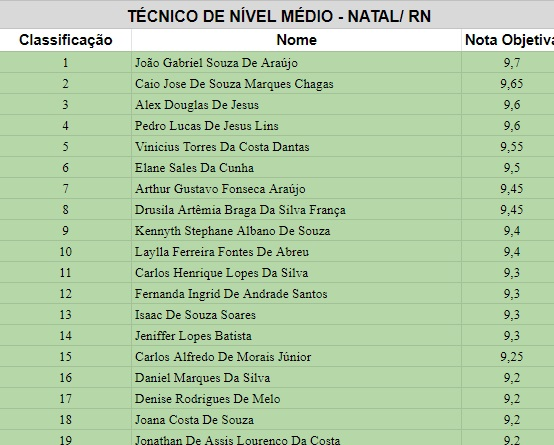
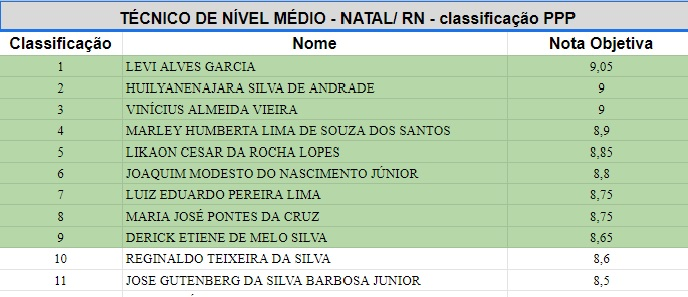

Insano Digital

Resultado da prova objetiva da fundase saiu!
A tão esperada nota da prova objetiva da fundase saiu. Agora os candidatos podem analisar suas notas e conferir se estão perto de obter a nomeação. Porém, ainda há um problema. O instituto AOCP divulgou o resultado em ordem alfabética, o que dificulta o candidato saber em qual colocação está de fato.
Não se preocupe com isso, candidato, pois logo abaixo você pode ver a lista dos aprovados geral e cotas PPP para as provas de técnico nível médio de Natal.
Classificação geral - Natal

Classificação PPP - Natal

Para ver o resto da classificação, faça o download abaixo!
- Baixar vagas geral download_for_offline
- Baixar vagas PPP download_for_offline